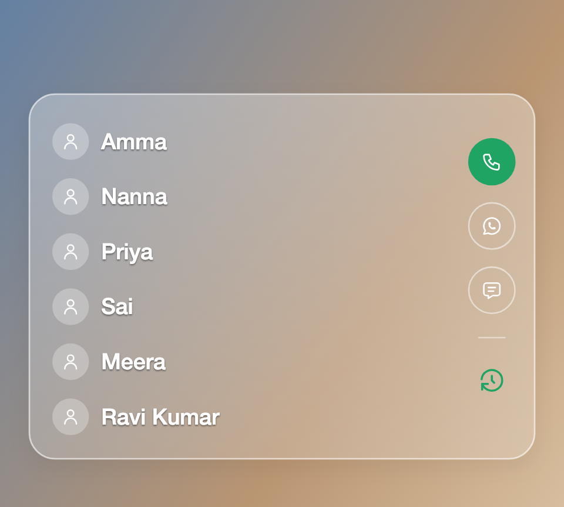
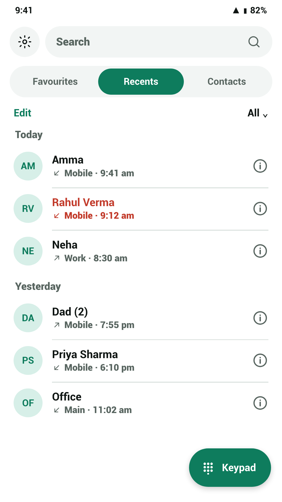
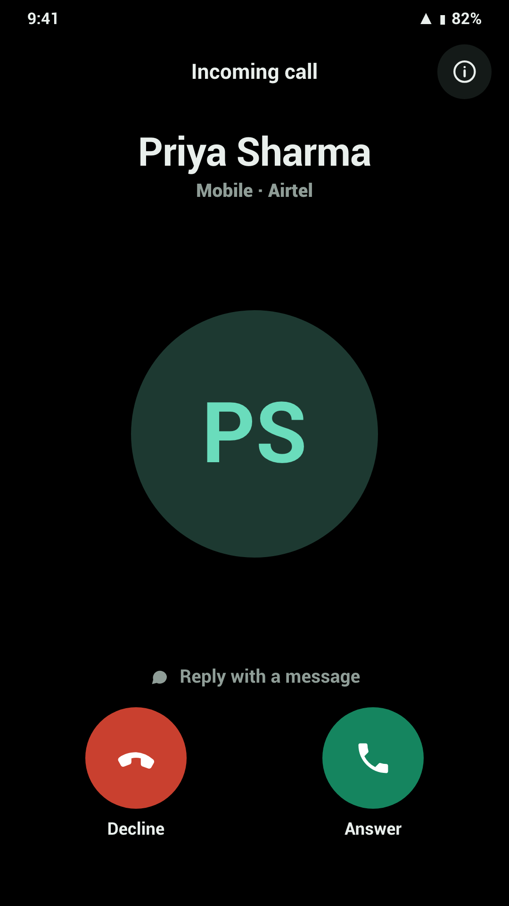
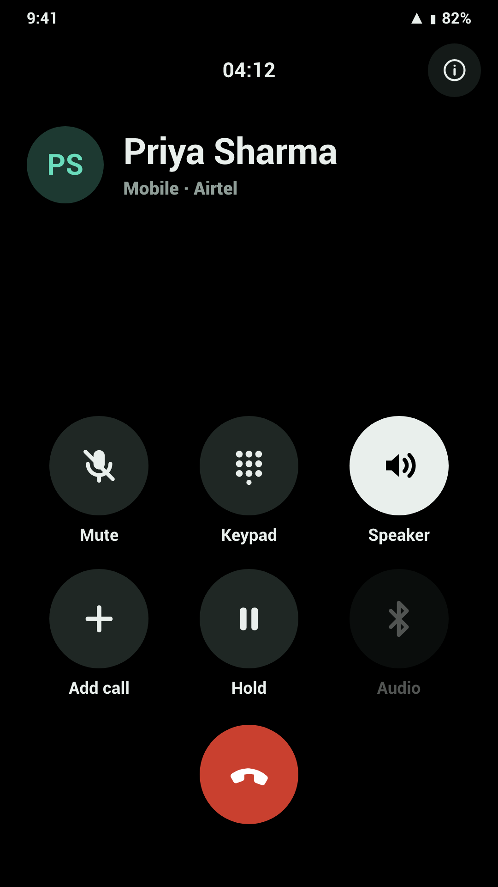
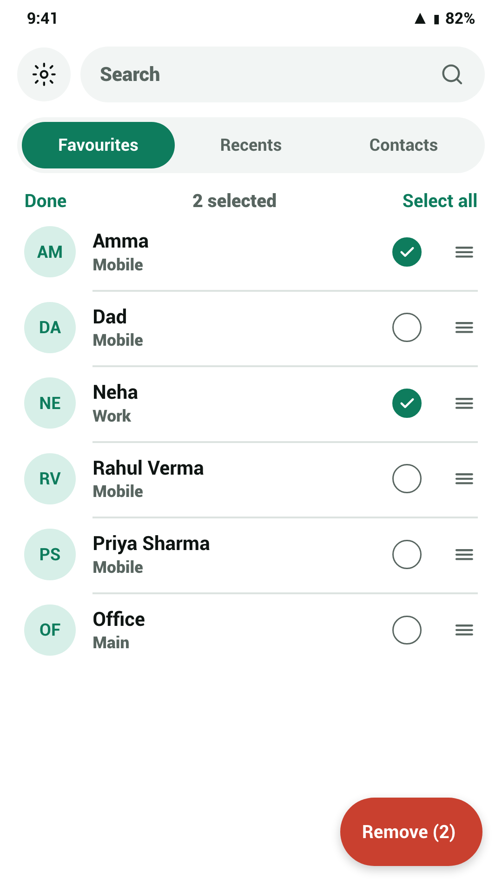
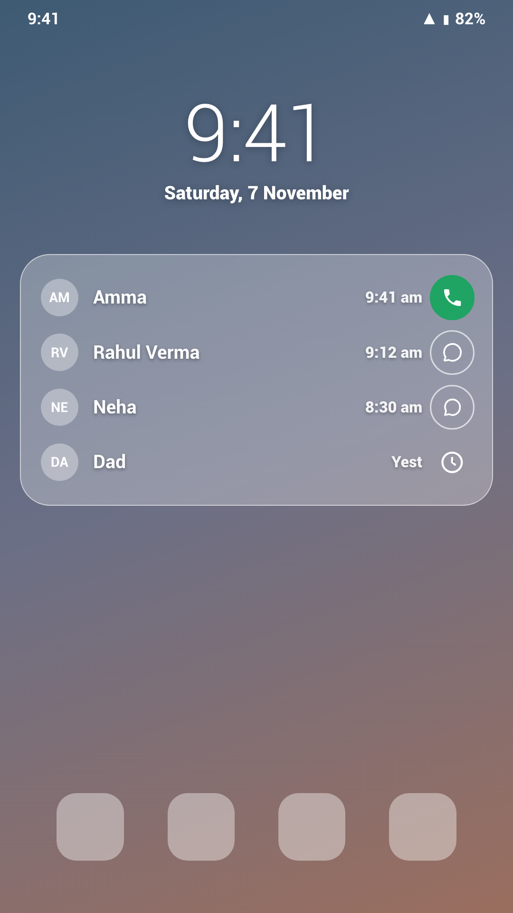
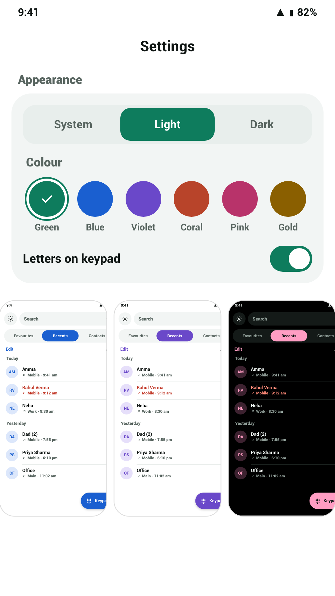

A simple Phone app
Your calls, favourites and contacts in one calm place, with big clear buttons and a call screen that's easy to use. Plus a home-screen widget for the people you call most.
Get it on Google PlayFree · No ads · Android 12 and newer

Get started
Make it your Phone app
Open Dial Deck and tap "Make it my phone app". Android asks which Phone app to use; pick Dial Deck. You can switch back any time.
Add the widget (optional)
Long-press your home screen, tap Widgets and add Dial Deck: your favourites and recent calls, one tap away.
What it does
Tap a name. It calls.
Favourites, Recents and Contacts, one swipe apart. Pull down to search the tab you're on, or use the keypad, which finds contacts as you type.
A call screen that's easy to use
The caller's photo, big and clear. Answer and Decline where your thumb is; bold, round buttons for Mute, Keypad, Speaker, Hold and more. Call waiting, swap and merge, and quick text replies.
Your favourites, your way
Put them in your own order. Select several calls or favourites with one swipe and delete or remove them together.
Missed calls and blocking
One tidy notification for missed calls. Block numbers, private callers, or anyone not in your contacts.
Made to fit you
Light and dark, six colours shared by the app and the widget, large and bold text, screen readers, small phones and foldables.
A closer look






Private by design
Nothing leaves your phoneDial Deck has no internet access at all. No accounts, no ads, no tracking. Your calls and contacts are only used on your phone.
Questions
Can I go back to my old Phone app?
Yes, any time: Android Settings › Apps › Default apps › Phone app, and pick the one you had. Dial Deck then stops reading your call history and works as a widget only.
Why does it ask for these permissions?
As your Phone app it needs your call history (for Recents and missed calls), contacts (names, photos and favourites) and phone (to make and receive calls). Everything stays on your phone and is never sent anywhere; the app can't even connect to the internet.
Is it really free?
Yes. No ads, no in-app purchases, no subscription.
Which phones does it work on?
Android 12 or newer: Pixel, Samsung, OnePlus, Vivo, Xiaomi and more, including tablets and foldables.
How do I send feedback?
Open Dial Deck › Settings › Help › Send feedback. It opens your email app with the details filled in.